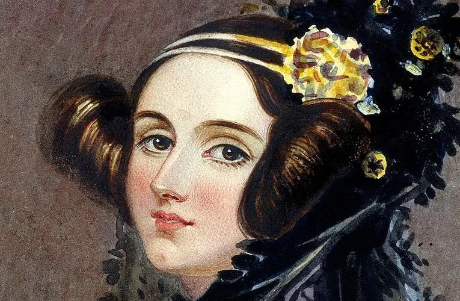
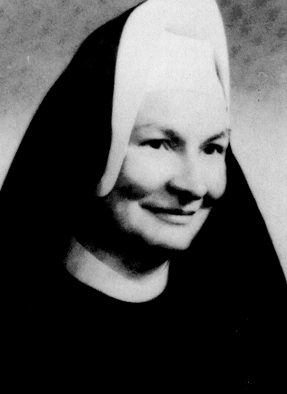
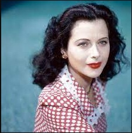

1840
Mulheres na Programação

Ada King, Condessa de Lovelace (Obra de Alfred Edward Chalon, 1840).
Em 1843, bem antes do surgimento do primeiro computador, Ada Lovelace já era responsável por criar o primeiro algoritmo já visto na história, descrevendo então as operações lógicas de uma máquina.
Ela é celebrada hoje como a primeira programadora do mundo, e uma das principais precursoras da ciência computacional.
1943
Mulheres na Programação

Mary Kenneth Keller, freira e também a primeira mulher a conquistar um doutorado em Ciências da Computação.
Mary teve importante participação na criação da linguagem de programação BASIC, foi autoa de quatro livros que são referência em computação e programação, além da fundação de um departamento de ciências da computação na Universidade Clarke, onde atuou como diretora até falecer em 1985.
Há também registros de suas ideias visionárias sobre como o computador seria essencial para auxiliar as pessoas no aprendizado, além daquelas acerca da inteligência artificial, em uma época em que só se achava o tema na ficção científica.
1940
Mulheres na Programação
Grace Hopper, desenvolvedora da base para a Common Business Oriented Language.
Sua maior contribuição foi sem dúvida durante sua atuação como analista de sistemas da Marinha dos Estados Unidos, nas décadas de 1940 até 1950.
Ela ficou conhecida como “vovó do COBOL” por ter desenvolvido a base para a Common Business Oriented Language, usada até a atualidade no processamento de bancos de dados comerciais.
1970
Mulheres na Programação
Carol Shaw foi pioneira no universo de games, na década de 70.
Quando trabalhou na Atari, ela lançou comercialmente o primeiro jogo criado por uma mulher, o 3-D Tic-Tac-Toe, que tinha como base o tradicional na época, jogo da velha.
Após, na Activision, ela programou seu jogo de maior repercussão: o River Raid, foi um clássico que ficou entre os mais populares de sua época. Diferente de vários games de tiro existentes até aquele momento, em que o jogo acontecia em uma tela fixa, no River Raid o avião criado, se movia verticalmente ao longo de um rio e combatia inimigos, como outros aviões, navios e helicópteros.
1997
Mulheres na Programação

Hedy Lamarr, atriz e inventora austríaca nascida em 1914.
Hedy, junto com o compositor e inventor George Antheil, criaram um aparelho de interferência em rádio para despistar radares nazistas, durante a Segunda Guerra.
Na época, achou-se a ideia complicada demais para ser aplicada pelo Departamento de Guerra dos EUA e acabou ficando guardado até 1962, quando o aparelho passou a ser usado por tropas militares em Cuba.
Mas apenas em 1997, a Electronic Frontier Foundation premiou Hedy Lamarr por sua contribuição e então no ano seguinte a invenção serviu de base para a criação das conexões Wi-Fi e CDMA em de telefones celulares.
üëã Continua com voc√™...